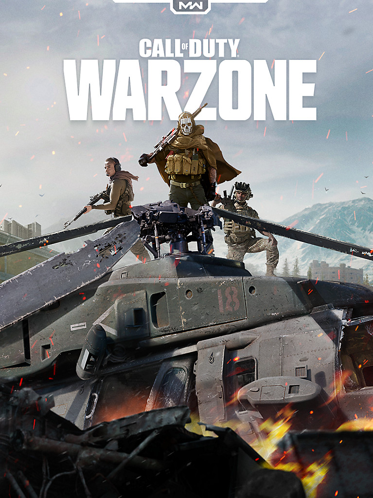
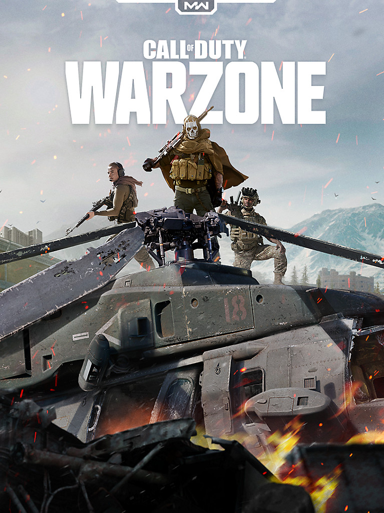

Los video juegos son un medio de entretenimiento con una variedad de gustos para todo tipo de jugadores.
A mi me gustan mucho los videojuegos normalmente les dedico unas 5 horas o mas, me gusta salir de la realidad para adentrarme en un mundo virtual lleno de posibilidades.
 
